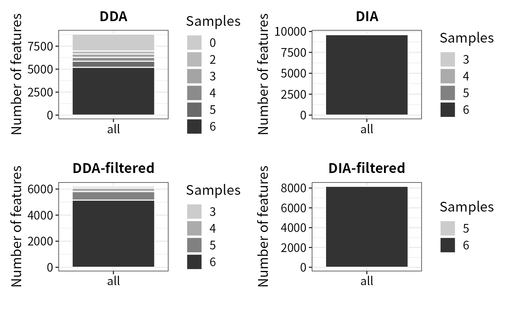
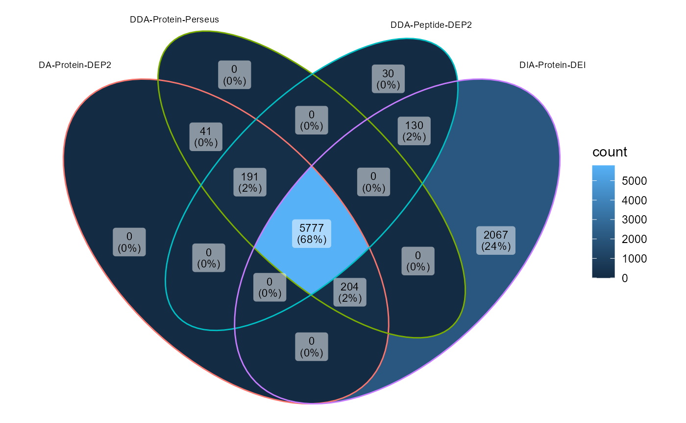
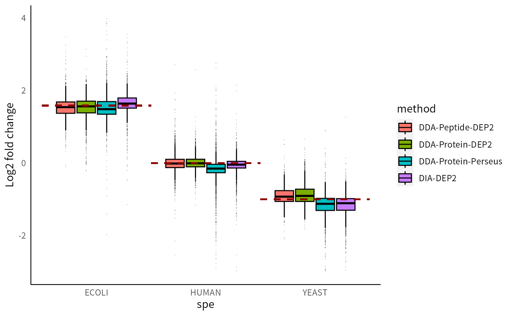
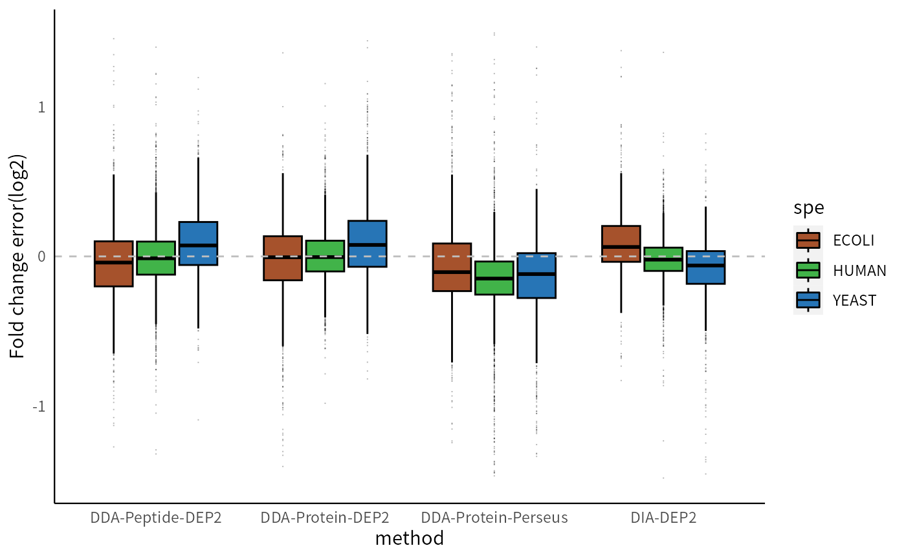
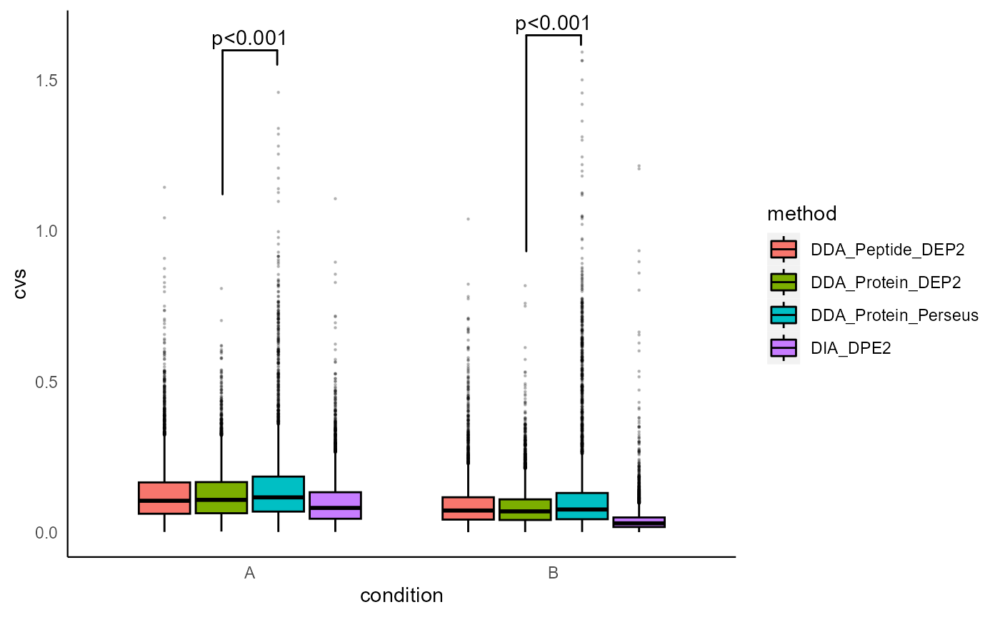
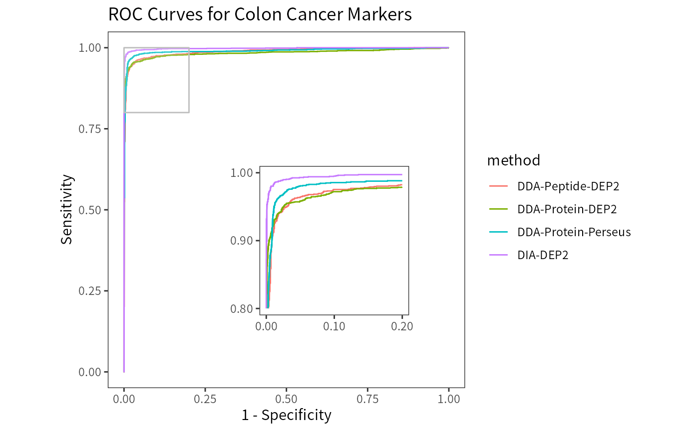
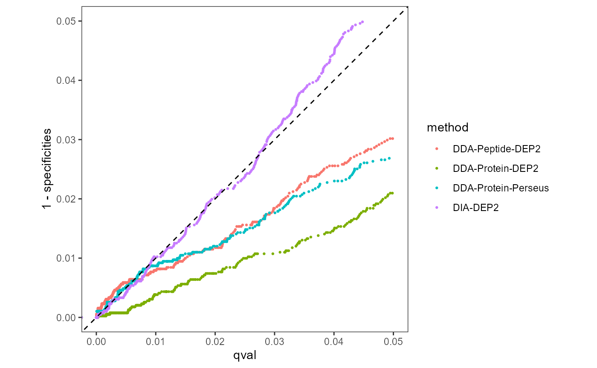
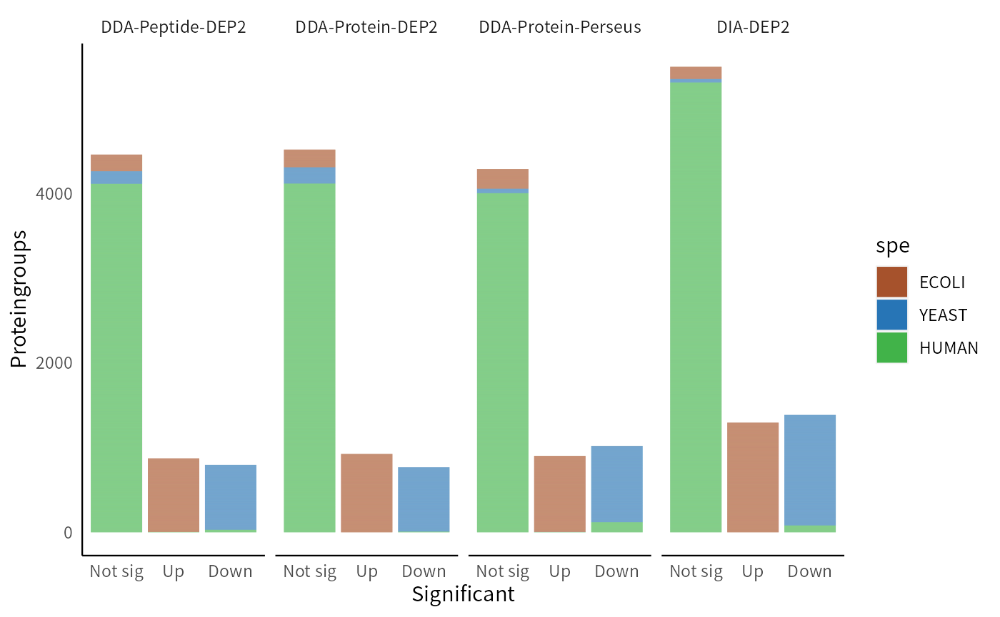
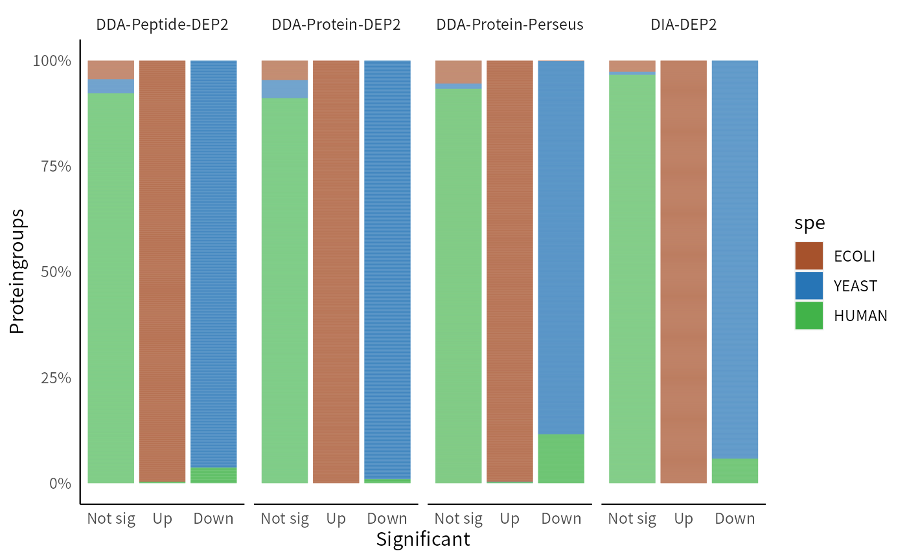

A benchmark on spike-in data
Zhenhuan Feng
05_Benchmark_on_spike_in_data.RmdAbstract
Here, we will compare the analysis result between DEP2 and Perseus using a benchmark dataset. The dataset contains two concentration groups in which Yeast and E.coli proteome were spiked into a human background. The example tables is available in this repository. The ratio of proteomes between species is as follows:
| Group | A | B |
|---|---|---|
| Human | 0.7 | 0.7 |
| Yeast | 0.24 | 0.12 |
| E.coli | 0.06 | 0.18 |
# Download OmicsExample and uncompress firstly
# Change the path to Omics Example
example_path = "the/path/to/OmicsExample"
knitr::opts_knit$set(
root.dir = example_path
)
knitr::opts_chunk$set(
collapse = TRUE,
comment = "#>",
message = FALSE,
warning = FALSE
)
library(DEP2)
library(magrittr)
library(dplyr)
library(ggVennDiagram)
library(patchwork)
library(ggplot2)Analysis workflows
We measured the spike-in data using both Data-independent acquisition (DIA) and Data-dependent acquisition (DDA) individually. The DDA raw data is searched and quantified by MaxQuant, while DIA data is searched by Spectronaut in library-free method. In this study, our main focus is on comparing the performance of DEP2 workflows and Perseus on the DDA results obtained from MaxQuant. Additionally, we also included the DEP2 DIA pipeline for comparison.
To ensure data credibility, we only considered proteingroups that were identified by more than one fragment (peptide). The details of each analysis pipeline can be found in the following table and code blocks:
| Pipelines label | MS acquisition & Search software | Input | Analyses workflow |
|---|---|---|---|
| DDA-Protein-DEP2 | DDA + MaxQuant | proteingroups’ LFQ intensity | DEP2 |
| DDA-Peptide-DEP2 | DDA + MaxQuant | peptides’ intensity | DEP2 re-aggregation |
| DDA-Protein-Perseus | DDA + MaxQuant | proteingroups’ LFQ intensity | Perseus |
| DIA-Protein-DEP2 | DIA + Spectronaut | report intensity | DEP2 |
DDA-Protein-DEP2 workflow.
This workflow represents the classical pipeline in DEP2 that has been modified from the DEP package, specifically designed for proteingroups results.
mq_pgfile <- "./A_spikeIn/MaxQuant_output/proteinGroups.txt.gz"
pg <- read.csv(mq_pgfile,sep = "\t")
## Generate unique names and ids
unique_pg <- make_unique(pg,
name = "Gene.names", #gene
ids = "Protein.IDs" #protein
)
## Convert se with expdesign table
ecols <- grep("LFQ.intensity.", colnames(unique_pg))
se <- make_se_parse(unique_pg, columns = ecols, mode = "delim")
## Filter & normalize & Impute
filt <- filter_se(se,thr = 0, fraction = 0.5,
filter_formula = ~ Reverse != '+' & Potential.contaminant !="+" & Peptides > 1)
norm <- normalize_vsn(filt)
set.seed(10000)
imp <- DEP2::impute(norm,fun = "RF")
## Differential test
diff <- test_diff(imp,type = "control", control = "A1", fdr.type = "BH")
dep <- add_rejections(diff, alpha = 0.05, lfc = 1)DDA-Peptide-DEP2 workflow.
This pipeline bypass the MaxLFQ summarization and instead performs re-aggregation of protein intensity based on peptide quantities.
mq_pepfile <- "./A_spikeIn/MaxQuant_output/peptides.txt.gz"
mq_pep <- read.csv(mq_pepfile,sep = "\t")
## Construct SummarizedExperiement
ecols <- grep("Intensity.", colnames(mq_pep), value = TRUE)
pe = make_pe_parse(mq_pep, columns = ecols, # columns is the 'Intensity' colunmns
mode = "delim", sep = "_", remove_prefix = TRUE)
## Filter & Impute & Normalize
pe = filter_pe(pe, thr = 0, fraction = 0.6,
filter_formula = ~ Reverse != '+' & Potential.contaminant !="+" )
pe <- normalize_pe(pe,method = "vsn", i = "peptideRaw")
set.seed(10000)
pe <- impute_pe(pe, fun = "bpca", name = "peptideImp", i = "peptideNorm")
## Aggregation
pe <- aggregate_pe(pe, aggrefun = "RobustSummary", fcol = "Proteins", reserve = "Gene.names", i = "peptideImp")
se_pep <- pe2se(pe, names = "Gene.names", ids = "smallestProteingroups")
filt_pep <- filter_se(se_pep,filter_formula = ~.n > 1)
norm_pep <- normalize_vsn(filt_pep)
## Differential test
diff_pep <- test_diff(norm_pep,type = "control", control = "A1", fdr.type = "BH")
dep_pep <- add_rejections(diff_pep, alpha = 0.01)DDA-Protein-Perseus
Processing the Perseus analysis output for subsequent comparison.
## The differetial test result of Perseus
Perseus_resfile <- "./A_spikeIn/MaxQuant_output/Perseus_test_res.txt.gz"
con <- file(Perseus_resfile, "r")
Perseus_resfile = readLines(con)
close(con)
## Remove the lines recording variable types.
Perseus_resfile = Perseus_resfile[-(2:3)]
## Read data
Perseus_res <- read.csv(text = Perseus_resfile,sep = "\t")
## Clean data
Perseus_res$p.value = 10^-(Perseus_res$X.Log.Student.s.T.test.p.value.B1_A1)
Perseus_res$q.value = Perseus_res$Student.s.T.test.q.value.B1_A1
Perseus_res$L2FC = Perseus_res$Student.s.T.test.Difference.B1_A1
Perseus_res$t.statistic = Perseus_res$Student.s.T.test.Test.statistic.B1_A1
Perseus_res <- make_unique(Perseus_res, "Gene.names", "Protein.IDs", delim = ";")
Perseus_res <- dplyr::filter(Perseus_res,Peptides > 1)
## Convert a SE object for subsequent comparison
ecols <- 1:6
Perseus_res2 = Perseus_res
Perseus_res2[ecols] <- 2^Perseus_res2[ecols]
dep_Perseus = make_se_parse(Perseus_res2,columns = 1:6,mode = "delim")DIA-Protein-DEP2
This workflow is similar to the first one, but it is applied to DIA data from Spectonaut instead of DDA results.
Spe_repfile <- "./A_spikeIn/Spectronaut_output/DIA4_MSStates_Report_new_noimpu.xls"
Spe_rep <- read.csv(Spe_repfile,sep = "\t")
## Reshape long table
Spe_rep_wided <- reshape_long2wide(Spe_rep,
sample_col = "R.FileName", # the column labeling sample names
feature_col = "PG.ProteinGroups", # PG IDs
expression_col = "PG.Quantity", # PG quantity.
shrink_ident_cols = c("PG.Genes","PG.Qvalue","PG.RunEvidenceCount"), # Gene names
remove_sample_prefix = TRUE, # remove prefix in sample_col
remove_sample_suffix = FALSE
)
## Unique names
unique_spe_pg <- make_unique(Spe_rep_wided,
name = "PG.Genes", #gene
ids = "PG.ProteinGroups" #protein
)
## Convert SE with expdesign table
ecols <- 2:7 # Expression col in the Spectronaut output
se_dia <- make_se_parse(unique_spe_pg,
columns = ecols,
mode = "delim",
remove_prefix = TRUE, ## remove the file prefix
remove_suffix = FALSE ## no suffix in this case
)
## Filter. Keep the protein which have at least two Evidence in one sample
Keep_proteins <- Spe_rep_wided$PG.RunEvidenceCount %>%
sapply(function(x){
max(strsplit(x,split = ";")[[1]]) >1
})
filt_dia <- se_dia[Keep_proteins,]
## Normalize & impute
norm_dia <- normalize_vsn(filt_dia)
imp_dia <- DEP2::impute(filt_dia, "bpca")
## Differential test
diff_dia <- test_diff(imp_dia, type = "control", control = "A5", fdr.type = "Storey's qvalue")
dep_dia <- add_rejections(diff_dia, alpha = 0.05, lfc = 1)Result Comparation
Missing values(MVs) are ubiquitous in label-free proteomics data, particularly in DDA methods. In comparison to the DDA method, DIA not only identity more proteins but also contains fewer MVs.
(plot_coverage(se) + ggplot2::labs(title = "DDA")) + (plot_coverage(se_dia) + ggplot2::labs(title = "DIA")) +
(plot_coverage(filt) + ggplot2::labs(title = "DDA-filtered")) + (plot_coverage(filt_dia) + ggplot2::labs(title = "DIA-filtered")) 
features_pg = rowData(dep)$ID
features_pep = rowData(dep_pep)$ID
features_perseus = Perseus_res$ID
features_dia = rowData(dep_dia)$ID
ggVennDiagram(list("DDA-Protein-DEP2" = features_pg,
"DDA-Protein-Perseus" = features_perseus,
"DDA-Peptide-DEP2" = features_pep,
"DIA-Protein-DEP2" = features_dia
),
set_size = 2.5,
label_size = 3)
Missing values can decrease the power of statistical tests,
potentially leading to false positives. To mitigate this issue, DEP2
filter out low-quanlity features with too many missing values through
function filter_pe/filter_se. Both the Perseus
and Protein-DEP2 pipelines consider an equal number of proteins due to
employing the same filter cutoff. While the Peptide-Aggregation workflow
also retains a closed number of features. As expected, DIA outperforms
DDA in terms of data coverage and retains the highest number of
features.
For the remaining missing values in features, DEP2 provides a range
of imputation strategies (DEP2::impute). In contrast,
Perseus software only offers one method of imputation. Although Perseus
can call the impute functions in the imputeLCMD package, this process is
counter-intuitive and requires an R executable program in the
system.
Imputation accuracy
In proteomics experiments, both random and systematic errors, as well
as missing values, have a significant impact on the accuracy of protein
quantification. Therefore, it is crucial to have an efficient data
processing pipeline that minimizes the effects of systematic errors and
missing values on the results.Despite filtering out features with
excessive missing values, a range of missing values still remains in the
assay. For the remaining missing values, DEP2 offers a variety of
imputation strategies (DEP2::impute). In contrast, the
Perseus software only offers one method of imputation. Additionally,
Perseus also can call the impute functions in the imputeLCMD package.
However, this process is counter-intuitive and requires an R executable
program in the system.
In this spike-in sample experiment, the protein concentrations of three species are precisely controlled. The E.coli proteome should exhibit a fold change (group B vs A) of 3, the YEAST proteome should have a fold change of 1/2, while the human background remains unchanged. By comparing the actual differences with the theoretical fold change, we can evaluate the ability of the four pipelines to restore missing values and minimize errors.
Among these four pipelines, DDA-Protein-DEP2 achieves the highest accuracy in fold change, with the global fold changes closely aligning with the theoretical line. Furthermore, the fold changes of each species are more consistent, resulting in a reduced number of outliers compared to the Perseus pipeline. This highlights the effectiveness of the MissForest imputation method. In contrast, Perseus yields fold changes that are markedly lower than the theoretical line. The results in the Peptide-aggregation pipeline are similar to those of DDA-Protein-DEP2. DIA-Protein-DEP2 exhibits slightly amplified fold changes but also has smaller interquartile ranges.
protein_info = read.csv("./A_spikeIn/protein_info.csv")
protein_info2 = protein_info %>% select(ID,spe,ox)
PG_df <- get_df_wide(dep) %>% as.data.frame %>%
mutate( meanQuant = rowMeans(select(., matches("^(A1|B1)_(1|2|3)$"))) ) %>%
dplyr::select(name, ID, L2FC = B1_vs_A1_diff, pval = B1_vs_A1_p.val, qval = B1_vs_A1_p.adj, t.statistic = B1_vs_A1_t.stastic, meanQuant) %>%
left_join(protein_info2) %>%
cbind(assay(dep))
PEP_df <- get_df_wide(dep_pep) %>% as.data.frame %>%
mutate( meanQuant = rowMeans(select(., matches("^(A1|B1)_(1|2|3)$"))) ) %>%
dplyr::select(name, ID,
L2FC = B1_vs_A1_diff, pval = B1_vs_A1_p.val, qval = B1_vs_A1_p.adj, t.statistic = B1_vs_A1_t.stastic, meanQuant) %>%
left_join(protein_info2) %>%
cbind(assay(dep_pep))
perseus_df <- Perseus_res %>%
mutate( meanQuant = rowMeans(select(., matches("^(LFQ.).*_(1|2|3)$"))) ) %>%
dplyr::select(name, ID, L2FC, pval = p.value, qval = q.value, t.statistic, meanQuant) %>%
left_join(protein_info2) %>%
cbind(select(Perseus_res,starts_with("LFQ.")) )
DIA_df <- get_df_wide(dep_dia) %>% as.data.frame %>%
mutate( meanQuant = rowMeans(select(., matches("^(A5|B5)_(1|2|3)$"))) ) %>%
dplyr::select(name, ID, L2FC = B5_vs_A5_diff, pval = B5_vs_A5_p.val, qval = B5_vs_A5_p.adj, t.statistic = B5_vs_A5_t.stastic, meanQuant) %>%
left_join(protein_info2) %>%
cbind(assay(dep_dia))
df_list <- list("DDA-Protein-DEP2" = PG_df,
"DDA-Peptide-DEP2" = PEP_df,
"DDA-Protein-Perseus" = perseus_df,
"DIA-DEP2" = DIA_df)
cols = c("ID", "spe", "L2FC", "meanQuant","pval", "qval")
res_table = df_list %>%
lapply(., function(x){
select(x,!!!syms(cols)) %>% distinct(., ID, .keep_all = T)
}) %>%
Map(function(x, method){
x$method <- method
x
},., names(.)) %>%
do.call(rbind, .)
intersect_id = df_list %>% lapply(function(x) x$ID) %>% Reduce(intersect, .)
## Plot L2FC boxplot. Dash line is the actual fold change
p_lfc <- ggplot(res_table, aes( y= L2FC, x = spe, fill = method)) +
geom_boxplot(
color = "black", size = 0.5,
outlier.color = "black", outlier.alpha = 0.3, outlier.size = 0.5, outlier.shape = "."
) +
ylab("Log2 fold change") +
geom_segment(y= log2(3),yend= log2(3), x = 0.5, xend= 1.5,
color = "darkred", linetype = "dashed", lwd = 0.8, alpha = 0.6) +
geom_segment(y= -log2(2),yend= -log2(2), x = 2.5, xend= 3.5,
color = "darkred", linetype = "dashed", lwd = 0.8, alpha = 0.6) +
geom_segment(y= 0,yend= 0, x = 1.5,xend= 2.5,
color = "darkred", linetype = "dashed", lwd = 0.8, alpha = 0.6) +
scale_y_continuous(limits = c(-3, 4)) +
theme(panel.grid = element_blank(),
panel.border = element_blank(),
axis.line = element_line(size = 0.4),
axis.ticks = element_blank(),
# axis.ticks.length = unit(0, "pt"),
panel.background = element_rect(fill = "white"),
legend.background = element_rect(fill = "white")
)
p_lfc
If we focus on the intersection of results from the four methods, the conclusions are consistent. DEP2 demonstrates greater accuracy in eliminating quantitative errors, as evidenced by its lower overall fold change error compared to Perseus.
res_table2 = dplyr::filter(res_table, ID %in% intersect_id)
res_table2$L2FC = ifelse(res_table2$spe == "HUMAN",
res_table2$L2FC ,
ifelse(res_table2$spe == "YEAST",
res_table2$L2FC + log2(2),
res_table2$L2FC - log2(3)))
p_lfcerr <- ggplot(res_table2, aes( y= L2FC, x = method, fill = spe)) +
geom_boxplot(
color = "black", size = 0.5,
outlier.color = "black", outlier.alpha = 0.3, outlier.size = 0.5, outlier.shape = "."
) +
geom_hline(yintercept = 0, linetype = "dashed", color = "grey") +
scale_fill_manual(values = c(HUMAN = "#41b349", YEAST = "#2775b6", ECOLI = "#a6522c")) +
scale_y_continuous(name = "Fold change error(log2)", limits = c(-1.5, 1.5)) +
theme(panel.grid = element_blank(),
panel.border = element_blank(),
axis.line = element_line(size = 0.4),
axis.ticks = element_blank(),
# axis.ticks.length = unit(0, "pt"),
panel.background = element_rect(fill = "white"),
legend.background = element_rect(fill = "white")
)
p_lfcerr
In all four pipelines, the fold changes of low-abundance proteins exhibit greater variability and relative inaccuracy. This result was anticipated since low-abundance proteins are more susceptible to the impact of random errors and missing values. Perseus imputation exhibits lower stability compared to MissForest (the imputation method used in DDA-Protein-DEP2). DIA data contains several low-expressed proteins (below 13), which are challenging to quantify accurately. The peptide-aggregation method does not show a deviation in global fold change, but the FC of low- to medium-abundance proteins are comparatively more unstable than the Protein-DEP2 method. This could be attributed to the presence of low-intensity peptides in low- to medium-abundance proteins, which possess higher aggregation weights than MaxLFQ after data processing. Further optimization of the aggregation method is required to reduce this effect.
res_table3 = dplyr::filter(res_table, ID %in% intersect_id)
res_table3$L2FC[res_table3$L2FC < -3.5] = -3.5
res_table3$L2FC[res_table3$L2FC > 3.5] = 3.5
p_lfctrend <- ggplot(res_table3, aes(x = meanQuant, y = L2FC, color = spe)) +
geom_point(shape = 20, alpha = 0.2, size = 0.8) +
geom_line(stat="smooth",method = "loess", formula = y ~x, span=0.3, size = 0.7, alpha = 0.5) +
scale_color_manual(values = c(HUMAN = "#41b349", YEAST = "#2775b6", ECOLI = "#a6522c")) +
scale_y_continuous(limits = c(-3.5,3.5), name = "Log2 fold change") +
xlab("Mean abundance") +
facet_wrap(~method,scales = 'free') +
theme_bw() +
theme(strip.background = element_rect(fill = "white", colour = NA))
p_lfctrend
The coefficients of variation (CVs) reflect the consistency between replicates and directly affects the result of statistical tests. DIA data has higher inter-replicate stability compared to DDA data. Furthermore, the utilization of MissForest imputation in DDA-Protein-DEP2 results in lower CVs compared to the other three pipelines, providing additional evidence of its effectiveness in mitigating the adverse effects of missing values.
dep_list = list(DDA_Protein_DEP2 = dep,
DDA_Peptide_DEP2 = dep_pep,
DDA_Protein_Perseus = dep_Perseus,
DIA_DPE2 = dep_dia)
CV_df = dep_list %>%
lapply(function(x){
assa = 2^assay(x) %>% as.data.frame()
cd = colData(x)
coef_variation <- function(x) {
coef = sd(x)/mean(x)
}
CVs = assa %>% tibble::rownames_to_column() %>%
cbind(., id = rowData(x)$ID) %>%
tidyr::gather("label", "Intensity", -c(rowname,id)) %>%
dplyr::left_join(., data.frame(cd), by = "label") %>%
dplyr::group_by(id, condition) %>% dplyr::summarise(cvs = coef_variation(Intensity)) %>%
dplyr::group_by(condition) %>% dplyr::mutate(condition_median = median(cvs)) %>%
dplyr::ungroup()
}) %>%
Map(function(x, method){
x$method <- method
x
},., names(.)) %>%
do.call(rbind,.)
CV_df2 = dplyr::filter(CV_df, id %in% intersect_id) %>%
arrange(id) %>%
mutate(condition = gsub("[0-9]","",condition))
P_A <- wilcox.test(
dplyr::filter(CV_df2, method == "DDA_Protein_DEP2", condition == "A") %>% .$cvs,
dplyr::filter(CV_df2, method == "DDA_Protein_Perseus", condition == "A") %>% .$cvs,
paired = T)
P_B <- wilcox.test(
dplyr::filter(CV_df2, method == "DDA_Protein_DEP2", condition == "B") %>% .$cvs,
dplyr::filter(CV_df2, method == "DDA_Protein_Perseus", condition == "B") %>% .$cvs,
paired = T)
library(ggsignif)
p_cvs <- ggplot(CV_df2, aes(x = condition, y = cvs, fill = method)) +
geom_boxplot(color = "black",
outlier.size = 0.2,outlier.alpha = 0.2, position = "dodge2") +
geom_signif(annotation = ifelse(P_A$p.value < 0.001, "p<0.001", P_A$p.value),
y_position = 1.6, xmin = 0.91, xmax = 1.09,
tip_length = c(0.3, 0.03)
) +
geom_signif(annotation = ifelse(P_B$p.value < 0.001, "p<0.001", P_B$p.value),
y_position = 1.65, xmin = 1.91, xmax = 2.09,
tip_length = c(0.45, 0.02)
) +
theme(panel.grid = element_blank(),
panel.border = element_blank(),
axis.line = element_line(linewidth = 0.4),
axis.ticks = element_blank(),
# axis.ticks.length = unit(0, "pt"),
panel.background = element_rect(fill = "white"),
legend.background = element_rect(fill = "white")
)
p_cvs
Statistical test
Receiver operator characteristic curve
Receiver operator characteristic (ROC) curve can assess the statistical power of each pipeline. DIA data exhibits a great advance compare to DDA data. The Perseus result have a higher AUC (area under curve) than DEP2 pipelines.
library(pROC)
cols = c("ID", "spe", "L2FC", "pval", "qval", "t.statistic")
df_list %>%
lapply(function(x){
select(x,!!!syms(cols)) %>%
distinct(., ID, .keep_all = T) %>%
dplyr::filter(ID %in% intersect_id)
}) %>% lapply(function(x){
pROC::roc(ifelse(x$spe == "HUMAN", F, T), abs(x$qval))
}) -> roc_res
roc_res %>% lapply(function(x){
df <- data.frame(specificities = x$specificities, sensitivities = x$sensitivities, qval = x$thresholds)
}) %>%
Map(function(x, method){
x$method <- method
x
},., names(.)) %>%
do.call(rbind,.) -> roc_df
roc_res %>% sapply(function(x){
as.numeric(x$auc)
}) -> aucs
aucs <- paste(names(aucs),round(aucs,3),sep = " ", collapse = ", ")
ggplot(roc_df) +
geom_line( aes(x=1 - specificities, y=sensitivities, color=method)) +
coord_equal() +
xlab("") + ylab("") +
scale_x_continuous(limits = c(0, 0.2), n.breaks = 3, labels = function(x) sprintf("%.2f", x)) +
scale_y_continuous(limits = c(0.8, 1), n.breaks = 3, labels = function(x) sprintf("%.2f", x)) +
theme_bw() +
theme(panel.grid = element_blank(),
legend.position = "none") -> p_zoom
ggplot(roc_df) +
geom_line( aes(x=1 - specificities, y=sensitivities, color=method)) +
xlim(c(0, 1)) + ylim(c(0, 1)) +
coord_equal() +
xlab("1 - Specificity") + ylab("Sensitivity") +
ggtitle("ROC Curves for Colon Cancer Markers") +
annotate("rect", xmin = 0, xmax = 0.2, ymin = 0.8, ymax = 1, fill = "transparent", color = "grey",alpha = 0.2) +
annotation_custom(ggplotGrob(p_zoom), xmin = 0.25, xmax = 0.9, ymin = -0.2, ymax = 0.9) +
theme_bw() +
theme(panel.grid = element_blank())
All four pipelines have high AUCs close to 1, indicating their ability to efficiently distinguish regulated proteins from the unchanged background.
DDA-Protein-DEP2 0.982, DDA-Peptide-DEP2 0.988, DDA-Protein-Perseus 0.99, DIA-DEP2 0.998.
ggplot(roc_df) +
geom_point( aes(x=qval, y=1-specificities, color=method), size = 0.5) +
xlim(c(0, 0.05)) + ylim(c(0, 0.05)) +
geom_abline(intercept = 0, linetype = "dashed") +
coord_equal() +
theme_bw() +
theme(panel.grid = element_blank())
Intersect cutoff
In practice, p-value is not the sufficient condition for determining
significance. Researchers often take both fold change and p-value into
consideration, and extract candidate lists based on both criteria.
Intersection thresholds, the thresholds that simultaneously satisfy both
p-value and fold change, are commonly used as cutoffs for identifying
significant candidates. We compare the significant proteins obtained by
the four methods after applying the intersect cutoff. This method is
also one of the threshold methods used in add_rejections.
In this case, we set a threshold at L2FC>1.2 and p<0.01 for
upregulated E. coli proteins, while for downregulated yeast proteins, we
choose a threshold of L2FC<-0.6 and p<0.05, considering a smaller
inter-group difference.
The DIA pipeline demonstrates superior performance, obtaining the highest number of true positive results and well controlling the false positive rate. Among the DDA pipelines, Protein-DEP2 effectively controls false positives, while Perseus detects more downregulated yeast proteins but also includes more false positives. The DDA-Peptide-DEP2 pipeline performs between the previous two pipelines.
res_table$trend = apply(res_table, 1,
function(x){
if( as.numeric(x["qval"]) > 0.05)
return("Not sig")
if( as.numeric(x["qval"]) <= 0.001 & as.numeric(x["L2FC"]) > 1.2)
return("Up")
if( as.numeric(x["qval"]) <= 0.05 & as.numeric(x["L2FC"]) < -0.6)
return("Down")
return("Not sig")
},simplify = F) %>% unlist
res_table$trend = factor(res_table$trend,c("Not sig","Up","Down"))
res_table$spe = factor(res_table$spe,c("ECOLI", "YEAST", "HUMAN"))
ggplot(res_table) + geom_bar(aes(x = trend, fill = spe,y=1),stat="identity") +
scale_fill_manual(values = c(HUMAN = "#41b349", YEAST = "#2775b6", ECOLI = "#a6522c")) +
facet_grid(~method,scales = 'free') +
ylab("Proteingroups") +
xlab("Significant") +
theme(panel.grid = element_blank(),
panel.border = element_blank(),
axis.line = element_line(size = 0.4),
axis.ticks = element_blank(),
panel.background = element_rect(fill = "white"),
legend.background = element_rect(fill = "white"),
strip.background = element_rect(fill = "white", colour = NA)
)
ggplot(res_table) + geom_bar(aes(x = trend, fill = spe,y=1), stat="identity", position = "fill" ) +
scale_y_continuous(labels = scales::percent) +
scale_fill_manual(values = c(HUMAN = "#41b349", YEAST = "#2775b6", ECOLI = "#a6522c")) +
facet_grid(~method,scales = 'free') +
ylab("Proteingroups") +
xlab("Significant") +
theme(panel.grid = element_blank(),
panel.border = element_blank(),
axis.line = element_line(size = 0.4),
axis.ticks = element_blank(),
# axis.ticks.length = unit(0, "pt"),
panel.background = element_rect(fill = "white"),
legend.background = element_rect(fill = "white"),
strip.background = element_rect(fill = "white", colour = NA)
)
Discussion
We compare DEP2 pipelines with Perseus analyses using a benchmark dataset. In this dataset, DEP2’s new imputation algorithm can appropriately estimate missing values, outperforming the left-shift methods in Perseus. In the statistical testing part, the DIA-DEP2 pipeline demonstrates the best performance, highlighting the necessity and availability of DEP2 for compatibility with various data. Perseus performs better than DDA-DEP2 pipelines in terms of sensitivity but has lower specificity. However, it’s noteworthy that we set the S0 parameter in Perseus to 0.5, which incorporates FC into the consideration of FDR control. If S0 remains at the default value of 0, Perseus employs the conventional t-test and will yield noticeably worse q values.
The newly introduced peptide-aggregation method performs similarly to the traditional proteingroups based method, but there is more obvious FC shrink and more outliers among low-abundance proteins, indicating that there is still space for improvement.
The analysis based on benchmark data demonstrates the feasibility of the DEP2 protein data analysis workflow. However, in actual research, the characteristics of proteomic data may differ. For example, the scale and specific extent of changes in regulatory proteins in AP-MS can vary significantly. DEP2 offers flexible imputation functions and incorporates multiple FDR correction methods. The choice of methods should depend on the the experimental design, objectives, and specific data characteristics.
Session information
#> R version 4.2.1 (2022-06-23 ucrt)
#> Platform: x86_64-w64-mingw32/x64 (64-bit)
#> Running under: Windows 10 x64 (build 19043)
#>
#> Matrix products: default
#>
#> locale:
#> [1] LC_COLLATE=English_United States.utf8
#> [2] LC_CTYPE=English_United States.utf8
#> [3] LC_MONETARY=English_United States.utf8
#> [4] LC_NUMERIC=C
#> [5] LC_TIME=English_United States.utf8
#>
#> attached base packages:
#> [1] stats4 stats graphics grDevices utils datasets methods
#> [8] base
#>
#> other attached packages:
#> [1] pROC_1.18.2 ggsignif_0.6.4
#> [3] ggplot2_3.4.1 patchwork_1.1.2
#> [5] ggVennDiagram_1.2.2 dplyr_1.1.0
#> [7] magrittr_2.0.3 DEP2_0.3.06.13
#> [9] R6_2.5.1 limma_3.54.1
#> [11] MSnbase_2.24.2 ProtGenerics_1.30.0
#> [13] mzR_2.32.0 Rcpp_1.0.10
#> [15] MsCoreUtils_1.10.0 SummarizedExperiment_1.28.0
#> [17] Biobase_2.58.0 GenomicRanges_1.50.2
#> [19] GenomeInfoDb_1.34.9 IRanges_2.32.0
#> [21] S4Vectors_0.36.1 BiocGenerics_0.44.0
#> [23] MatrixGenerics_1.10.0 matrixStats_0.63.0
#> [25] BiocStyle_2.26.0
#>
#> loaded via a namespace (and not attached):
#> [1] circlize_0.4.15 BiocBaseUtils_1.0.0
#> [3] systemfonts_1.0.4 plyr_1.8.8
#> [5] igraph_1.4.0 lazyeval_0.2.2
#> [7] splines_4.2.1 BiocParallel_1.32.5
#> [9] TCseq_1.22.6 digest_0.6.31
#> [11] foreach_1.5.2 htmltools_0.5.4
#> [13] fansi_1.0.4 memoise_2.0.1
#> [15] cluster_2.1.4 doParallel_1.0.17
#> [17] ComplexHeatmap_2.14.0 Biostrings_2.66.0
#> [19] annotate_1.76.0 askpass_1.1
#> [21] pkgdown_2.0.7 RVenn_1.1.0
#> [23] colorspace_2.1-0 blob_1.2.3
#> [25] textshaping_0.3.6 xfun_0.39
#> [27] crayon_1.5.2 RCurl_1.98-1.10
#> [29] jsonlite_1.8.4 missForest_1.5
#> [31] impute_1.72.3 survival_3.5-3
#> [33] iterators_1.0.14 glue_1.6.2
#> [35] gtable_0.3.1 zlibbioc_1.44.0
#> [37] XVector_0.38.0 GetoptLong_1.0.5
#> [39] DelayedArray_0.23.2 shape_1.4.6
#> [41] scales_1.2.1 vsn_3.66.0
#> [43] rngtools_1.5.2 DBI_1.1.3
#> [45] edgeR_3.40.2 xtable_1.8-4
#> [47] units_0.8-1 clue_0.3-64
#> [49] reticulate_1.28 bit_4.0.5
#> [51] proxy_0.4-27 preprocessCore_1.60.2
#> [53] umap_0.2.10.0 glmnet_4.1-6
#> [55] httr_1.4.4 RColorBrewer_1.1-3
#> [57] farver_2.1.1 pkgconfig_2.0.3
#> [59] XML_3.99-0.13 sass_0.4.5
#> [61] locfit_1.5-9.7 utf8_1.2.3
#> [63] labeling_0.4.2 tidyselect_1.2.0
#> [65] rlang_1.0.6 reshape2_1.4.4
#> [67] AnnotationDbi_1.60.0 munsell_0.5.0
#> [69] tools_4.2.1 cachem_1.0.6
#> [71] cli_3.6.0 generics_0.1.3
#> [73] RSQLite_2.3.0 QFeatures_1.8.0
#> [75] fdrtool_1.2.17 evaluate_0.20
#> [77] stringr_1.5.0 fastmap_1.1.0
#> [79] mzID_1.36.0 yaml_2.3.7
#> [81] ragg_1.2.5 knitr_1.42
#> [83] bit64_4.0.5 fs_1.6.1
#> [85] purrr_1.0.1 randomForest_4.7-1.1
#> [87] KEGGREST_1.38.0 AnnotationFilter_1.22.0
#> [89] ncdf4_1.21 nlme_3.1-162
#> [91] doRNG_1.8.6 compiler_4.2.1
#> [93] rstudioapi_0.14 png_0.1-8
#> [95] e1071_1.7-13 affyio_1.68.0
#> [97] tibble_3.1.8 geneplotter_1.76.0
#> [99] bslib_0.4.2 stringi_1.7.12
#> [101] highr_0.10 RSpectra_0.16-1
#> [103] desc_1.4.2 lattice_0.20-45
#> [105] Matrix_1.5-3 classInt_0.4-8
#> [107] vctrs_0.5.2 pillar_1.8.1
#> [109] lifecycle_1.0.3 BiocManager_1.30.19
#> [111] jquerylib_0.1.4 MALDIquant_1.22
#> [113] GlobalOptions_0.1.2 data.table_1.14.8
#> [115] bitops_1.0-7 qvalue_2.30.0
#> [117] pcaMethods_1.90.0 affy_1.76.0
#> [119] bookdown_0.34 KernSmooth_2.23-20
#> [121] codetools_0.2-19 MASS_7.3-58.2
#> [123] assertthat_0.2.1 openssl_2.0.5
#> [125] DESeq2_1.38.3 rprojroot_2.0.3
#> [127] rjson_0.2.21 withr_2.5.0
#> [129] GenomicAlignments_1.34.0 Rsamtools_2.14.0
#> [131] GenomeInfoDbData_1.2.9 mgcv_1.8-41
#> [133] parallel_4.2.1 MultiAssayExperiment_1.24.0
#> [135] grid_4.2.1 tidyr_1.3.0
#> [137] class_7.3-21 rmarkdown_2.20
#> [139] Rtsne_0.16 sf_1.0-9
#> [141] itertools_0.1-3